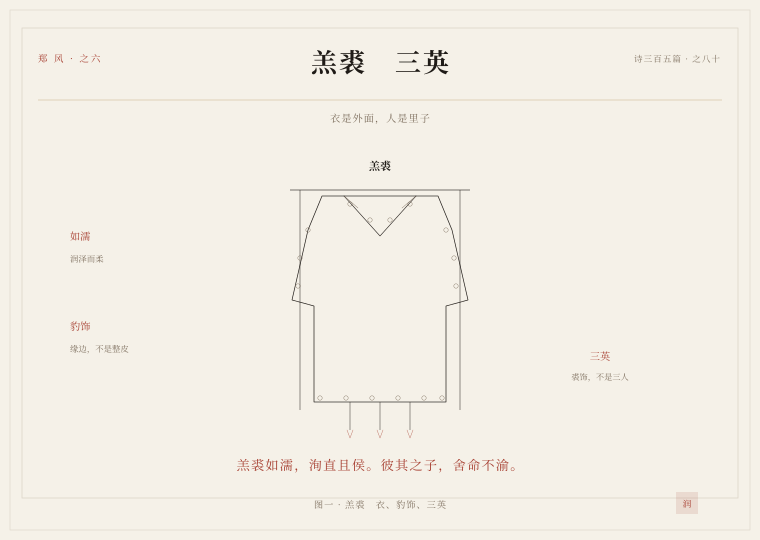
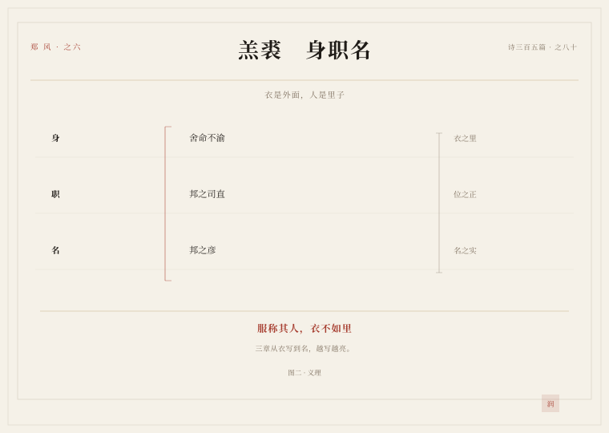

第八十篇 羔裘
郑风 · 之六 SJ080
朗读 · 普通话
依经文原文朗读，章次不读出；配古琴底乐，不改速、不加拖腔。全库同一音色（豆包 TTS），非播音员录制。
一 解题
诗三判：
- 谁在说：一个看见“羔裘大夫”的人。他不说这位大夫做过什么，只说衣裳、豹饰、三英，再说“舍命不渝”“邦之司直”“邦之彦”。话是赞，眼睛却在看“如今还有没有这样的人”。
- 说什么事：三章三层。一章写“身”：羔裘润泽，人信直而美，弃命不变；二章写“职”：豹饰武健，人是邦之司直；三章写“名”：裘色安和，三英明亮，人是邦之彦。由衣到身，由身到职，由职到名。
- 为何编在此：郑风之六。079 写“军闲而散”，080
写“朝有服而无其人”。一支军队闲死，一个朝廷靠衣裳撑场面，都是“本”先坏了。
《毛序》：“《羔裘》，刺朝也。言古之君子，以风其朝焉。”
朱子《诗集传》：“赋也。羔裘，大夫服也。如濡，润泽也。洵，信。直，顺。侯，美也。舍，弃也。渝，变也。豹饰，缘以豹皮也。孔，甚也。司直，主正人过也。三英，裘饰也。粲，光明也。彦，士之美称。○言古之君子，以风其朝焉。”
本库的看法：《羔裘》是一首把“服”写成“里子”的诗。
三章都从衣裳起，却都不落在衣裳上：一章落在“舍命不渝”，二章落在“邦之司直”，三章落在“邦之彦”。衣是外面，人是里子；衣越讲究，里子越要经得起看。
毛序说“言古之君子，以风其朝”，风是“讽”：把古人的里子摆出来，让今人的衣裳自己发虚。
先辨四事：“羔裘”是大夫之服，不是羊皮袄；“如濡”是润泽，不是湿；“舍命不渝”是弃命不变，不是“舍掉性命也不改变主意”的现代话；“三英”是裘饰，不是三位英雄。
二 经文
第一章
羔裘如濡，洵直且侯。
彼其之子，舍命不渝。
第二章
羔裘豹饰，孔武有力。
彼其之子，邦之司直。
第三章
羔裘晏兮，三英粲兮。
彼其之子，邦之彦兮。
分章：三章，章四句。
三 韵读
- 一章：濡、侯、渝，侯部；四句一韵。
- 二章：饰、力、直，职部；四句一韵。
- 三章：晏、粲、彦，元部；四句一韵。
读法：三章三个韵部，一章一换；像三件衣裳，一件比一件亮。
但每章后两句都落在“彼其之子”，韵可以换，人不换。
四 字义与名物
- 羔裘：大夫之服，用小羊皮制成。如濡：润泽柔顺之貌；不是“湿”。
- 洵：信、确实。直：正直；朱子训“顺”，谓顺理。侯：美。
- 舍命：弃命、委命。渝：变。舍命不渝：虽弃命而不变节；郑笺“谓见危授命”。
- 豹饰：以豹皮为裘之缘饰；大夫服制。
- 孔武有力：甚武而有力；不是说这人会打架，是称其“能”。
- 司直：主正人之过。邦之司直：一国之“正人”之官。
- 晏：安和、鲜盛。三英：裘饰；毛传、朱子皆以为裘饰，一说“三德”，不从。粲：光明。
- 彦：士之美称；邦之彦：一国之俊彦。
五 今译
羔裘润泽柔顺，这人确实正直而美好。那样一个人，弃命也不变节。
羔裘以豹皮为饰，这人甚武而有力。那样一个人，是一国的司直。
羔裘安和鲜盛，三英明亮。那样一个人，是一国的俊彦。
六 章旨
- 一章：写“身”。衣润泽，人信直；“舍命不渝”是里子。衣可以柔，人必须硬。
- 二章：写“职”。豹饰武健，人司直；“孔武有力”不是力气，是担当。能正人，先要能正己。
- 三章：写“名”。裘安三英亮，人彦；名不是包装，是前面两章的总结。
总收：服可美，人不可假；舍命不渝，才是羔裘的里子。
三章从衣写到名，越写越亮；亮到最后，照出的是“今朝无此人”。
七 诗教
- 兴：以羔裘起兴。衣是眼前物，人是衣里人；先看衣，再看人，是诗的顺序。
- 观：观一朝之人物，不看他穿什么，看他“舍命”时变不变。衣裳可以借，命不能借。
- 群：一国有“司直”，才有“邦之彦”。正人不是一个人的事，是一个位置的事。
- 怨：诗里全是赞，怨在赞外。把古人赞到十分，今人便少一分；不骂，比骂狠。
八 分寸与边界
- 不可把“羔裘”当羊皮袄。它是大夫之服；一读成冬衣，礼制就没了。
- 不可把“如濡”当“湿”。它是润泽柔顺；湿是水，濡是光。
- 不可把“舍命不渝”当“固执”。它是弃命不变节；固执是性格，不渝是节操。
- 不可把“孔武有力”当“会打架”。它是称其能、担当；一读成武夫，司直就没了。
- 不可把三章当三个人。三章是同一个人的身、职、名；分成三人，诗就散了。
九 存疑
- 诗旨：毛序“刺朝，言古之君子以风其朝”；朱子从之。一说美郑之大夫，不一定是“古之君子”。
本库从毛、朱，以“风”读。
- “直”：毛传“直，正也”；朱子“直，顺也”。正直与顺理，一刚一柔，可并存。
- “三英”：毛传、朱子皆以为裘饰；一说“三德”（刚、克、武之类）。从裘饰，才与“粲”相应。
- “舍命”：郑笺“弃命”；一说“舍，置也”，置命于不顾。两读皆通，以“弃命不变”为主。
- 作者与年代：毛序不言作者；朱子亦不言。是否刺郑文公、郑庄公朝，无确证。
十 跨典
- 《论语·宪问》：“见利思义，见危授命。”——可与“舍命不渝”对读；授命是行为，不渝是底色。
- 《论语·子路》：“其身正，不令而行；其身不正，虽令不从。”——“邦之司直”先正己。
- 《礼记·表记》：“君子不失足于人，不失色于人，不失口于人。”——羔裘之容，是“不失色”，不是虚饰。
- 《诗本音》：三章韵读，濡、侯、渝侯部，饰、力、直职部，晏、粲、彦元部，见卷三。
十一 双卡与图
双卡七对：
| 羔裘（大夫之服） |
羔裘（羊皮袄） |
| 如濡（润泽） |
如濡（湿） |
| 舍命不渝（弃命不变节） |
舍命不渝（固执己见） |
| 豹饰（豹皮缘饰） |
豹饰（豹皮衣服） |
| 司直（主正人过之官） |
司直（直接管人） |
| 三英（裘饰） |
三英（三位英雄） |
| 彦（士之美称） |
彦（颜色） |

图一 · 羔裘 衣、豹饰、三英

图二 · 羔裘 身、职、名
读图三处：
- 衣在架上：图一中间一件羔裘，领口、袖口、下摆三段，豹饰只作缘边，三英只作三条垂饰。不画人，因为诗先看衣，后看人。
- 三段缘边：豹饰不是整件豹皮，是“缘”；一画成整件，大夫服就成了猎装。
- 三英在下：三英是裘饰，垂在下摆；不画成三个人，也不画成三颗星。